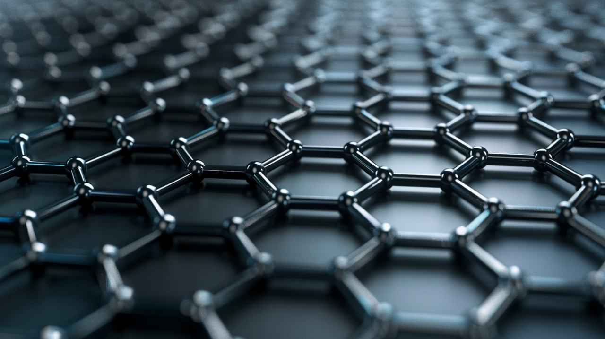

In this page i'll be talking about the complications and cons of smart materials
The main disadvantage of smart materials is their cost and complicated production, they can't be produced the same way as plastic or steel. The materials need to use expensive raw materials, specific chemical equations and lab techniques to make sure that the atomic structure is correct.
Smart materials also take a lot of time and money to create, complex metal alloys are extremely expensive which makes them unusable for many simple building projects or products in general
